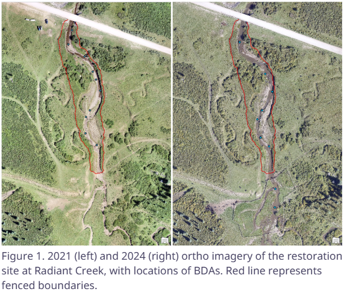

Stream Restoration Monitoring at Radiant Creek Using Remote Sensing

This project used remote sensing techniques to evaluate stream restoration conditions at Radiant Creek through imagery, spectral indices, and classification outputs.
View project details